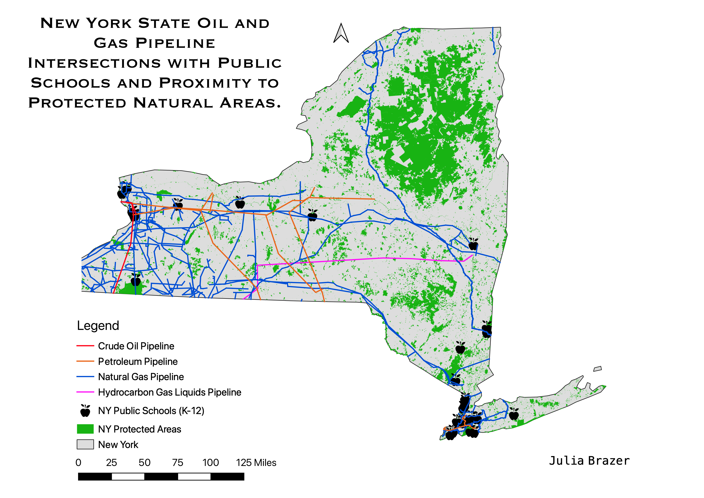

Homework 10: Vector Spatial Analysis
Julia Brazer
I was curious how close natural protected areas were to pipelines and if any of them overlapped in the state of New York. Once I got started on this assignment, I read an article online talking about the dangers of schools next to pipelines, so I added all K-12 Public Schools that intersected with pipelines. If there were any accidents with regards to the pipelines, such as a leak or an explosion, the protected areas would suffer great loss as well as the rare and endangered animals that reside within them. The same goes for schools, where if there was some kind of incident, many people and children would be harmed, particularly becuase schools act as centeral hubs for residential communities.

I first created a new layer with the NY state boundaries, changed the projection to 2263 (a recommended state plane), and gave the state a muted color. I then imported all of my pipeline shapefiles and converted them into the correct projection and altered their colors and width to make them more visable. I used the intersection geoprocessing tool to get rid of any lines that were outside of the state's boundaries. I then uploaded a shapefile of the states public schools, used the intersection tool to pull out which ones overlapped directly with any pipelines, and then changed the symbology to a black apple. Lastly, I uploaded 4 different shapefiles of protected areas as defined by the state, merged them, and then used the dissolve tool to get rid of any boundaries that were not pleasant looking. I got rid of the boarder color so that the green areas would look more aesthetic and less convoluted. I decided to place the apples behind the pipelines so it would be easier to see where exactly there was overlap, and with which pipelines.
Data used for this project
Link to pipeline shapefile
Link to protected areas data and shapefile
Link to NY public school data and shapefile
Link to state boundaries shapefile